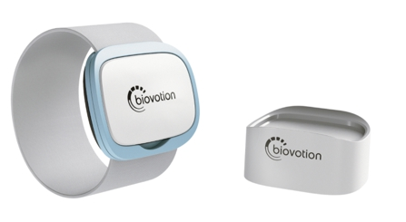
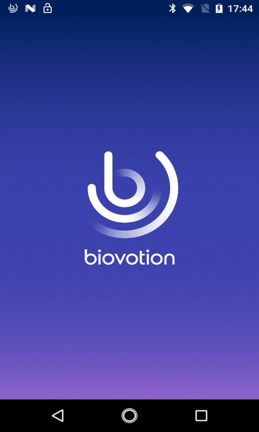
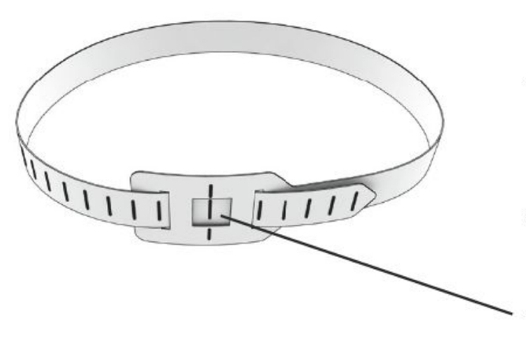

Everion Biovotion (Patient Materials)
General Device Introduction
Biovotion’s Everion comes in two parts: a medical wearable device that records a range of vital signs, such as Heart Rate, Blood Oxygenation, and Skin Temperature, and a mobile application that stores this data and sends it to a server for use by medical professionals. The device can be worn day and night, and is water and sweat resistant, but cannot be worn during swimming or when in a sauna.
How does this device look?
| _ Everion Device _ Biovotion’s Everion is a small device worn on the upper arm that records vital signs in real-time, stores the data on the device, and sends this to a paired mobile smartphone when it is in range. This device is placed in an armband, has no buttons and requires no calibration, making it simple to setup and use. | |
|---|---|
|  | |
|  | _ Patient Application _This mobile application is used in parallel with the Everion device to collect and present the collected data visually. The application can be installed on a modern smartphone and paired using Bluetooth. |
What does it record?
The Everion device collects vital-sign data to give a rich understanding of general health, for example, heart rate, skin temperature, respiratory rate, blood oxygenation, energy expenditure, sleep quality, and stress levels.
How is it used?
The Everion device is worn on the upper-arm (bicep) using an elastic strap and plastic casing to hold it in place. It is worn in direct contact with skin and clothing fits tightly over the top of it, such as a shirt or jumper. The Everion device cannot be worn when swimming or in a sauna.
Data transfer protocol for patients
As a patient: do I need to do anything on a daily basis or all N days?
Yes. Data will be automatically transferred from the Everion device to the mobile application, and then uploaded from the smartphone to the internet. It is important that when wearing the device that the mobile application is within a two-meter range, and that the smartphone has internet connection.
You should check daily that the “Cloud status” of the Everion mobile application is “Finished upload” as illustrated in Figure N. This ensures that data you have created is successfully uploaded and accessible for research.

Figure N: A persistent notification will be shown in the provided smartphone to indicate the status of the Everion device.
As a patient: do I need to do anything after each individual period of device / app use ended?
During the periods you have been asked to not wear the device, please ensure that it remains in the docking station and on charge.
As a patient: do I need to do anything after my full periods of use of a specific device / app ends?
Yes. After your full period of use ends in the trial, you must put everything back into its original packaging and return the device at the final study visit. The researcher will collect this from you if a home visit is being carried out.
Device How To / setup for wear
| Hold your Everion with one hand with sensors facing downwards; a green light will flash from below the device which is where the sensors are located. There are two plastic fasteners to securely fasten the Everion device to the strap. Place the first fastener on the your Everion and push it down until it cannot go any further. |  |
|---|---|
 |
Create a loop with the armband and attach the second fastener to your Everion. |
| Slide the Everion with the now attached armband over your hand and up your arm. The strap must be in direct contact with your skin. The device should be placed on the upper arm (where the bicep it) and roughly two fingers above the elbow crease. |  |
 |
Alternatively, you can fasten one strap to the device and loop the other fasten/strap around your bicep and secure it from this position. The Everion must be placed on the upper arm as indicated above. |
| Once the device is looped over the arm, the second plastic fastener must be pushed onto the top of the Everion to secure it into place. |  |
 |
To take off your Everion either slip it down your arm or detach the first fastener and take it off from the upper-arm directly. |
What sort of a device / application is this, what is it for and how does it work?
The Biovotion is a wearable device for monitoring vital physiological parameters.
What will I need to do before I can start using this?
Any account setup required?
Yes. You need to create an account on the Everion app to track sleeping process and extract data (not compulsory).
Needs pairing with hub-device?
Not applicable.
Any configuration / assembly required?
Yes. The multi-sensor platform needs to be charged via the charger set and then be attached to the elastic strap.
Troubleshooting/FAQ
The device / app seems to have stopped working: what should I do?
Battery?
The total charging time may take up to 2 hours and the battery lasts up to 18-hours. Please charge the device every night.
You can switch to battery saving mode through the Everion app, which will prolong the battery life of the device for up to 45 hours; or to light skin mode with SpO2 on the app which may prolong the battery life of Everion up to 30 hours.
Connectivity issues?
When encountering connectivity issues, the device will vibrate to alarm you that the device has been out of range from the connected smartphone. Please always try to keep the connected smartphone with you during wear. The device’s blue LED will blink to indicate the readiness to connect at the same time. The device will vibrate again to confirm that it is reconnected.
Need to restart or log in again?
To restart the device, take it off from the strap and place it upside down so that the sensor faces you ( 1 ). Place you index finger on the reset window (2) and keep it there. Then a red LED light up. After 3-5 seconds, the Everion will vibrate and about 10 seconds later the red LED goes off., then the Everion is reset. Please remove your finger, the Everion will automatically turns on and performs a self-test.

Using the device / app is uncomfortable to me: what can I do?
Adjust wear style?
Normally the device should be placed about two fingers above the elbow-crease. However, if you feel the chosen band size initially is too tight or too loose, please change the band to a larger or smaller size until you feel it is comfortable to wear. You can test the comfort level by bending your arm and check how you feel.
Adjust usage pattern?
Clean the device and skin underneath the device regularly and after each sport session. You can alternate the arm used for measurement so your skin can receive some rest. The device should be dried once it becomes wet or it may cause skin irritation. Avoid using skin care products (e.g. oils and lotions) in the area you wear the device if they lead to a skin irritation. The Everion should not be worn over an area with a tattoo, skin disease or skin problems including wounds, sores and burns as this can result in prolongation or aggravation of symptoms. If the soreness persists, then take off the device and contact the study centre to report the issue.
How can I get help with using this?
If you have any other questions or concerns, please contact your local study centre:
| Newcastle, United Kingdom | Rotterdam, Netherlands | Kiel, Germany | Muenster, Germany |
| Person Name Centre Name Location |
Person Name Centre Name Location |
Person Name Centre Name Location |
Person Name Centre Name Location |
Device return
What do I do when a period of device use is over?
Please clean the surface of Everion device with rubbing alcohol. Then return both device and armband back to the clinician.
Before the device is returned or disposed of: does any data need to be transferred?
No. Your clinician will take both the Everion device and provided Samsung smartphone. They can then transfer the data for you if it has not automatically been uploaded.
Do I need to return the device somewhere?
Please contact the medical professional that provided you with it to arrange further steps. You will have to either return it in person or by post – subject to further individual arrangement.